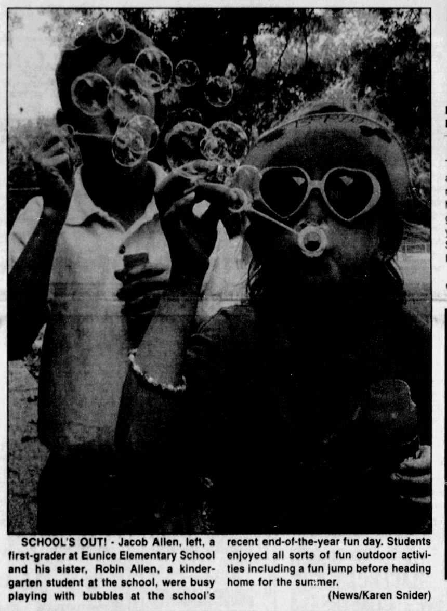
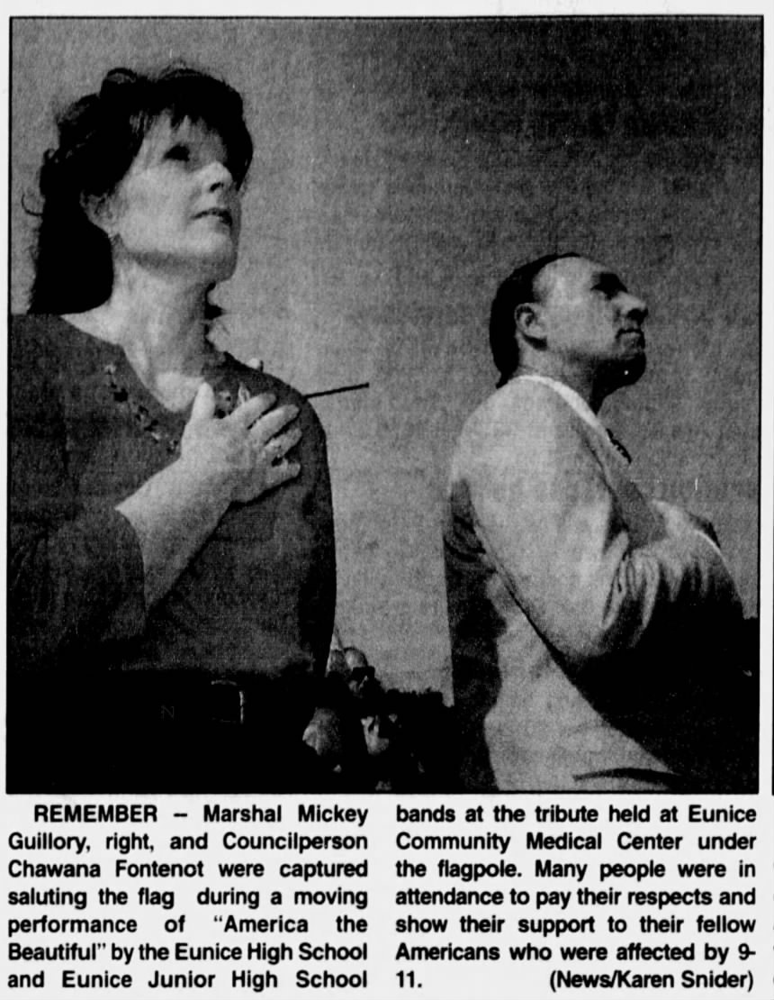
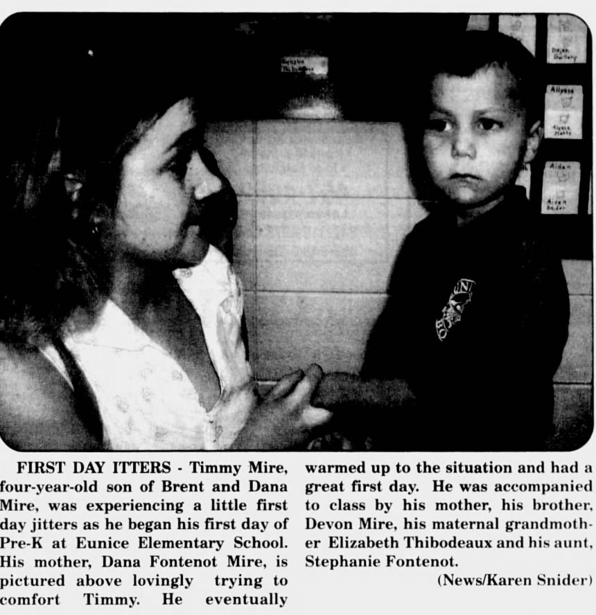
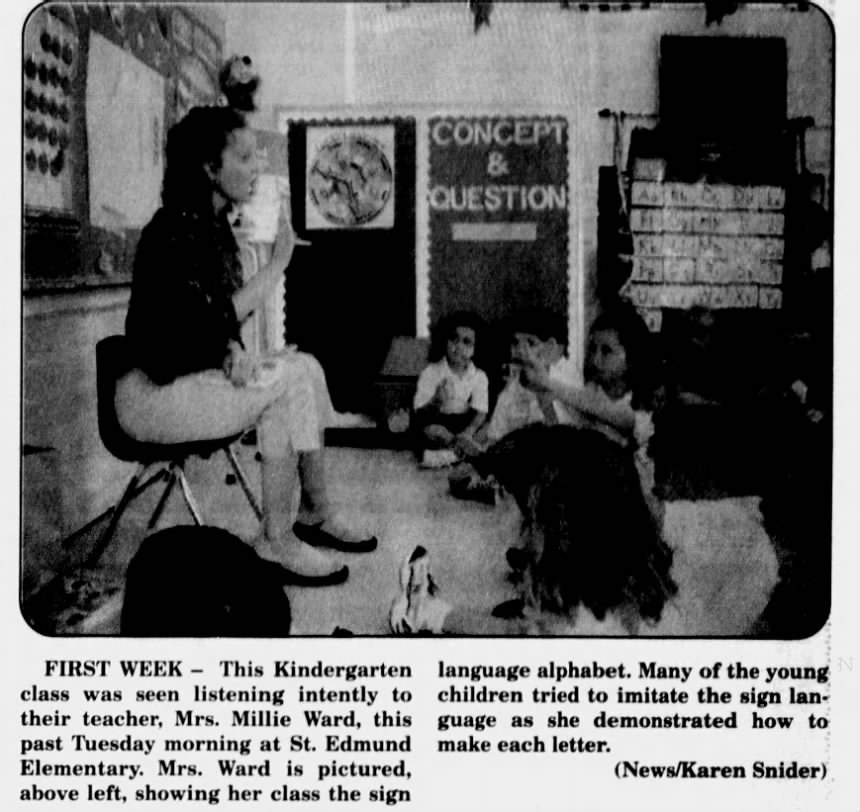
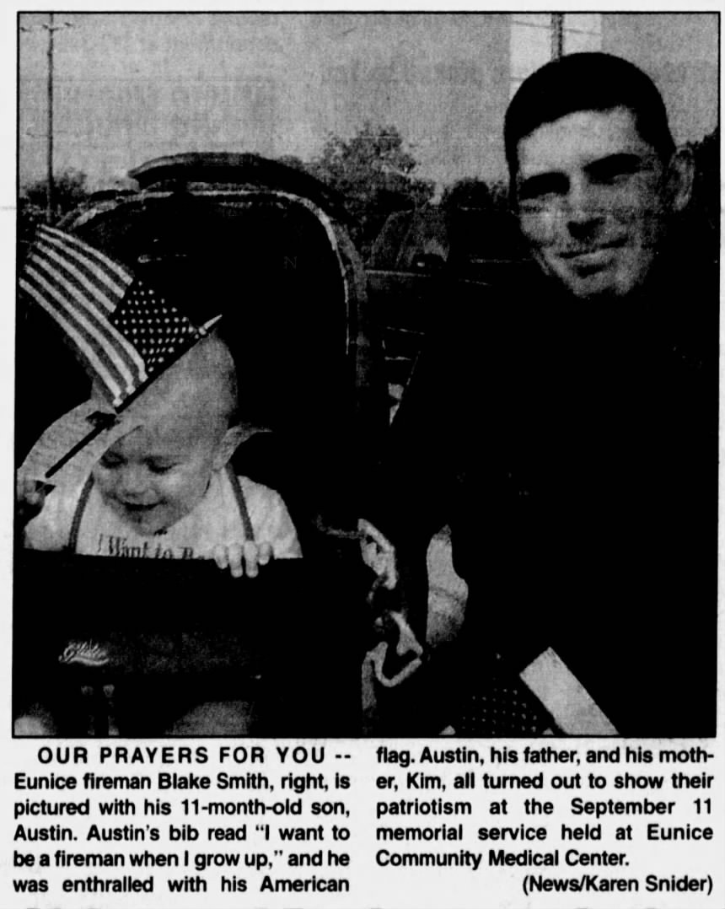
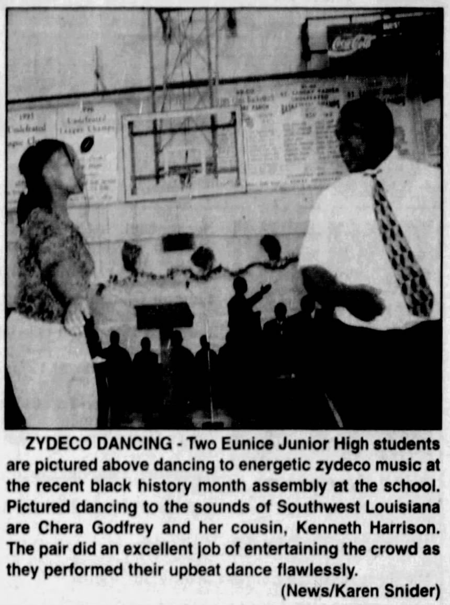
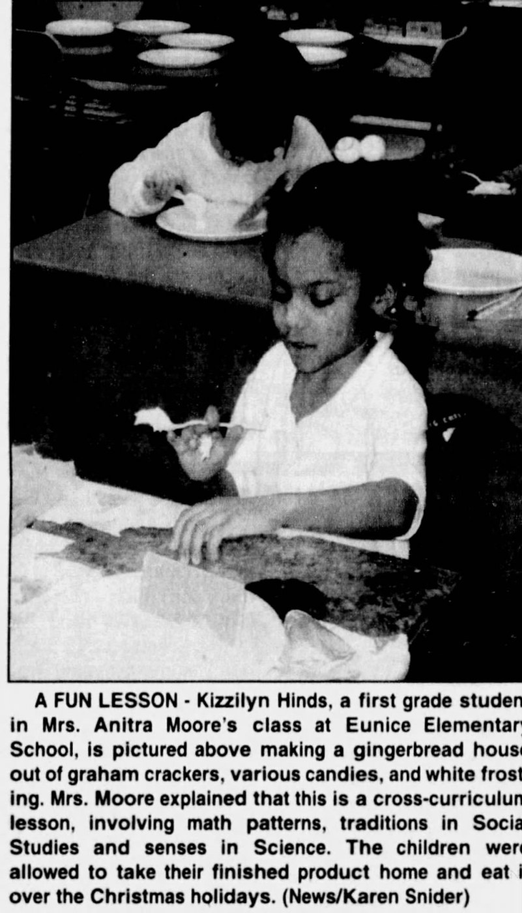

Award-recognized photojournalism
School’s Out!
A spontaneous moment at a school celebration, with bubbles and expressions captured in motion.
Published photojournalist and editorial professional with experience in film and digital photography, deadline-driven news coverage, and visual evaluation.
Archival reproductions from printed newspaper pages. Print aging and scanning affect contrast, resolution, and tonal detail; these are not original camera files.

A spontaneous moment at a school celebration, with bubbles and expressions captured in motion.

A quiet moment of remembrance during a September 11 tribute.

A parent reassures a child on the first day of school.

A teacher introduces sign language to kindergarten students.

A parent and infant attend a September 11 remembrance.

A candid scene of dancers at a community event.

A candid classroom moment during a hands-on activity.
As a reporter for The Eunice News in Louisiana, I photographed my own assignments, documenting community events, education, and human-interest stories under daily newsroom deadlines. My work emphasizes timing, candid moments, composition, and visual storytelling. My experience spans both film and digital photography, complemented by later work in AI content evaluation.
Photography recognition: Honorable Mention for the published photograph School’s Out! in a Louisiana newspaper competition. The competition name and award year are being verified.
Photographs shown are archival published newspaper reproductions. All selections are attributed to Karen Adkins Snider; original publication credits should be consulted where available.